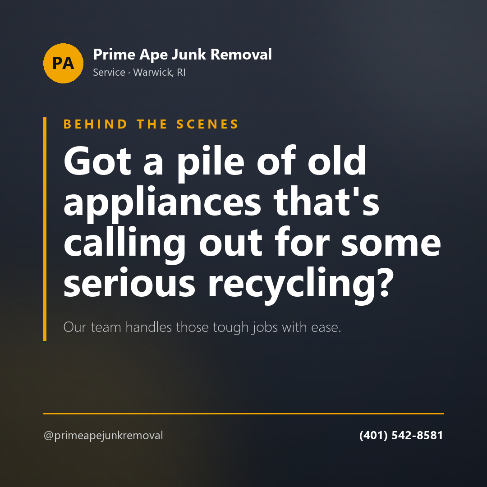

Post idea · Instagram
Got a pile of old appliances that's calling out for some serious recycling? Our team handles those tough jobs with ease. #WarwickJunkRemoval #PrimeApeExerts
Same-day junk removal across Rhode Island and nearby Massachusetts — from a single bulky item to a full property cleanout, hauled away in one visit.
Free estimate — call or text(401) 542-8581“You point, we load, and we haul everything away.”
In their own wordsReclaim your space without the heavy lifting. They handle the loading and the disposal, from small pickups to full property cleanouts.
Bulky pieces and mattresses removed and disposed of — the awkward items most people have no way to move themselves.
Help with large, heavy items when the problem isn't the hauling, it's getting the thing out of the house in the first place.
Light interior demolition through to hauling away construction and renovation debris — one team for every stage of the cleanup.
Water pulled out of basements after flooding or a leak, alongside the cleanout of whatever the water ruined.
Old, unused oil tanks removed safely — a job with rules attached, done by people who do it regularly.
Roofing and siding work, with the tear-off debris hauled off by the same crew rather than left in the driveway.
Basements, attics, estates and evictions. Single-room declutters up to whole properties, cleared in one visit.
839 Warwick Ave
Warwick, RI 02888
Content